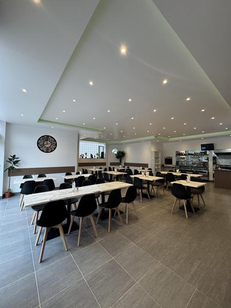
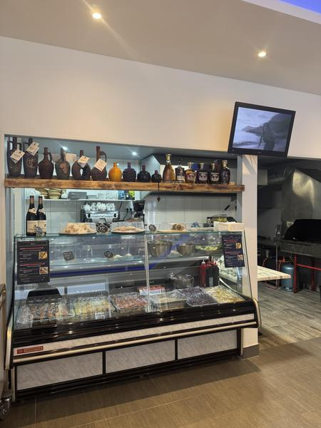
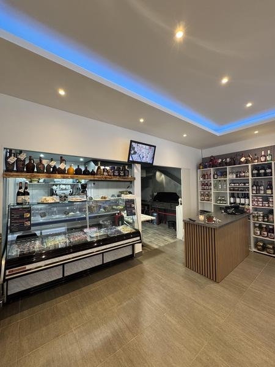
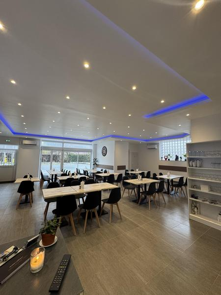

01
Brochette de poulet
Façonnée maison · cuisson au barbecue intérieur
Veynes · Hautes-Alpes · Cuisine arménienne
Brochettes façonnées maison, cuisson au barbecue intérieur et saveurs venues d’Arménie.
01 / La signature
La flamme rassemble.
Le goût raconte.
À Veynes, Grillades du Chef fait dialoguer la convivialité des grandes tablées et une culture culinaire arménienne généreuse. Les brochettes sont préparées maison, puis servies avec salade fraîche, frites ou boulgour.
Le lieu réunit restaurant, salon de thé et petite épicerie de produits d’Arménie — du déjeuner au dîner, sur place ou à emporter.

Une adresse à plusieurs rythmes : déjeuner autour des grillades, pause sucrée au salon de thé, découverte de produits arméniens à l’épicerie fine.

Produits et boissons venus d’Arménie

Gâteaux maison, glaces et boissons

04 / Le lieu
05 / À votre table
10 h–15 h / 18 h–22 h. Horaires à confirmer avant votre venue.
Une braise.
Une table.
Une histoire.